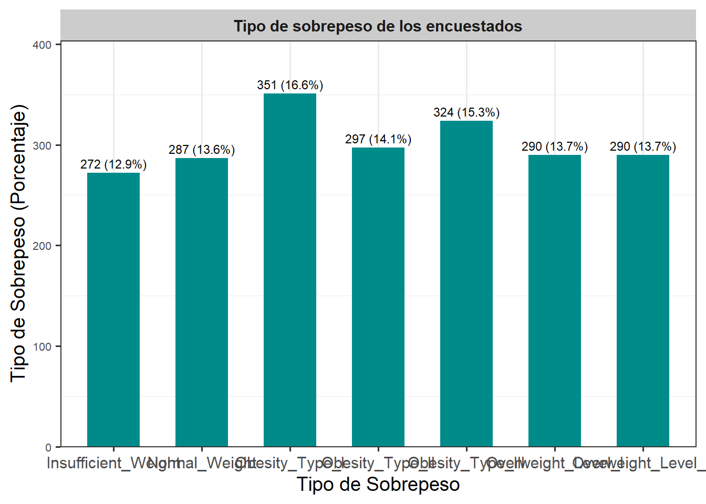
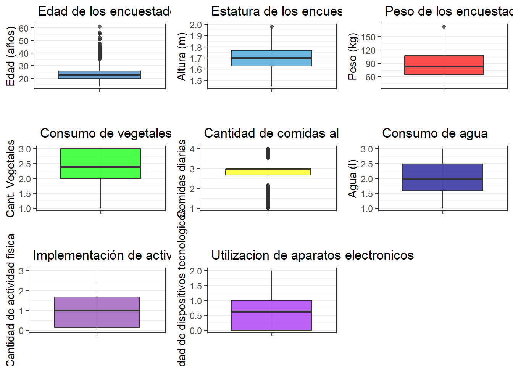
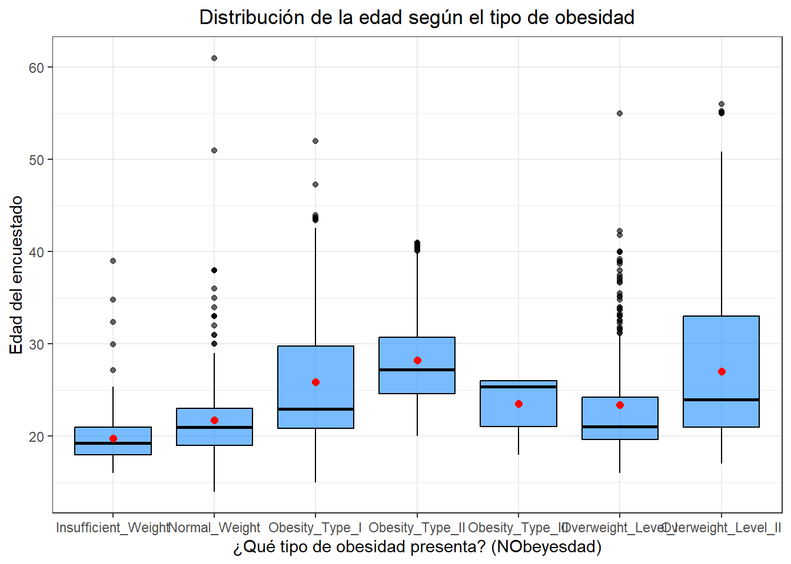
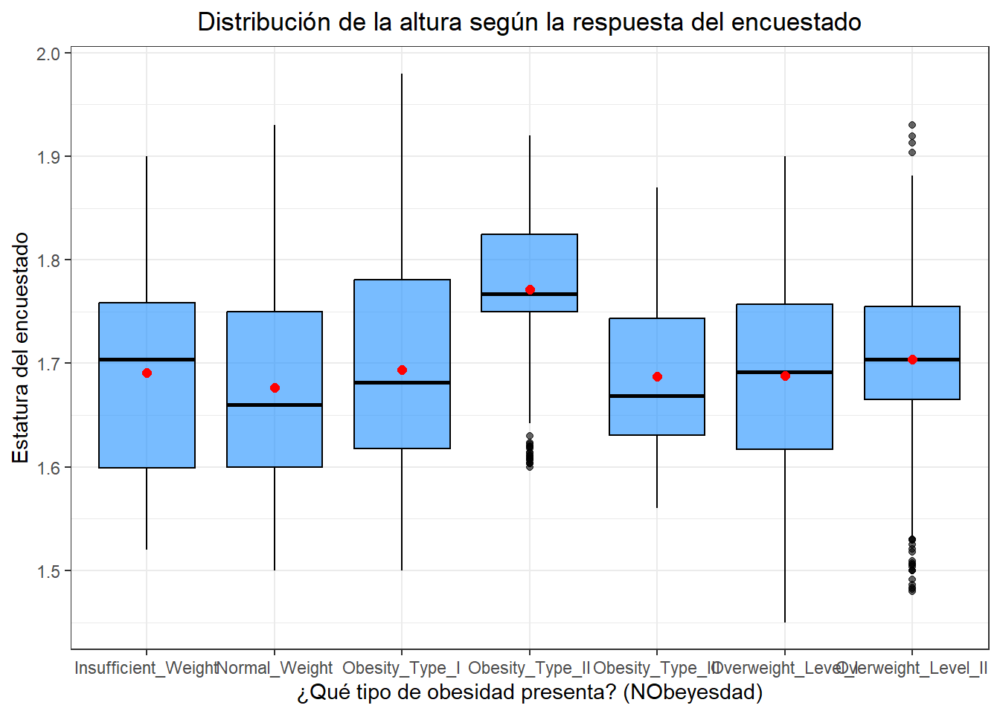
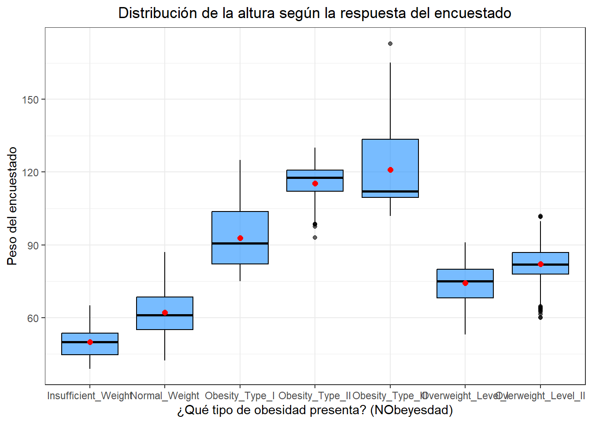
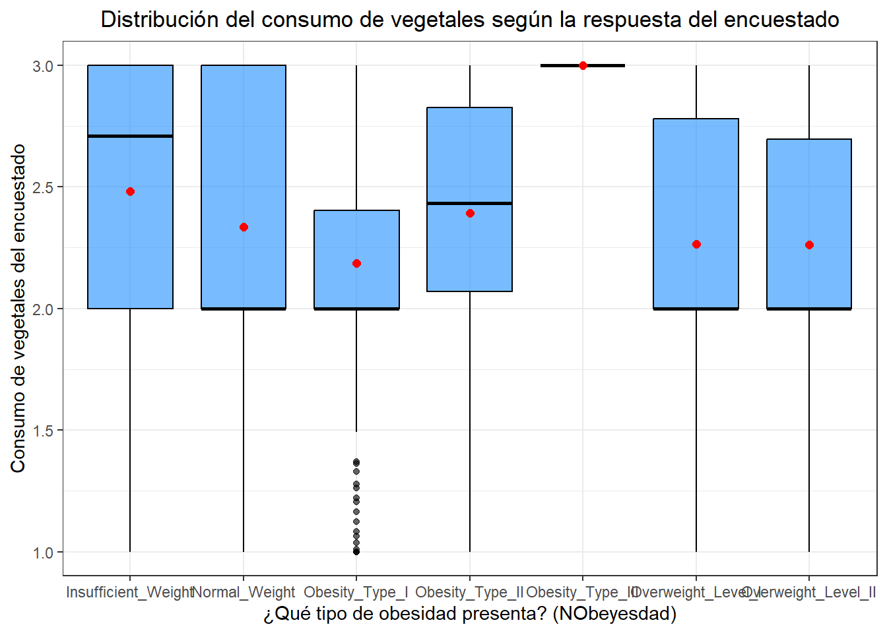
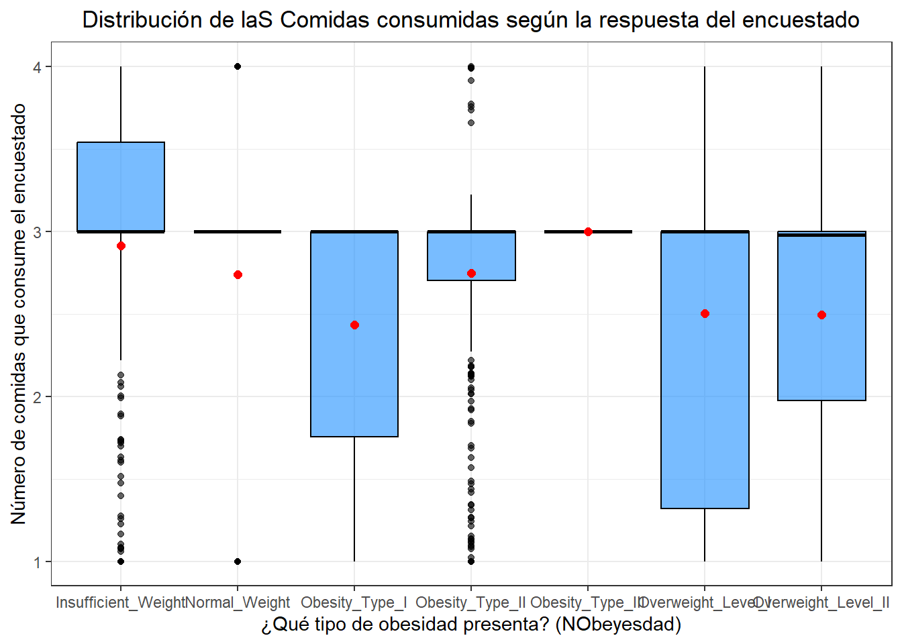
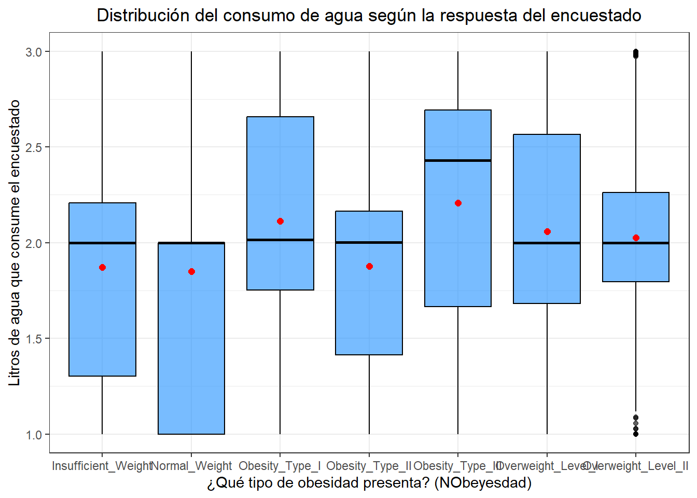
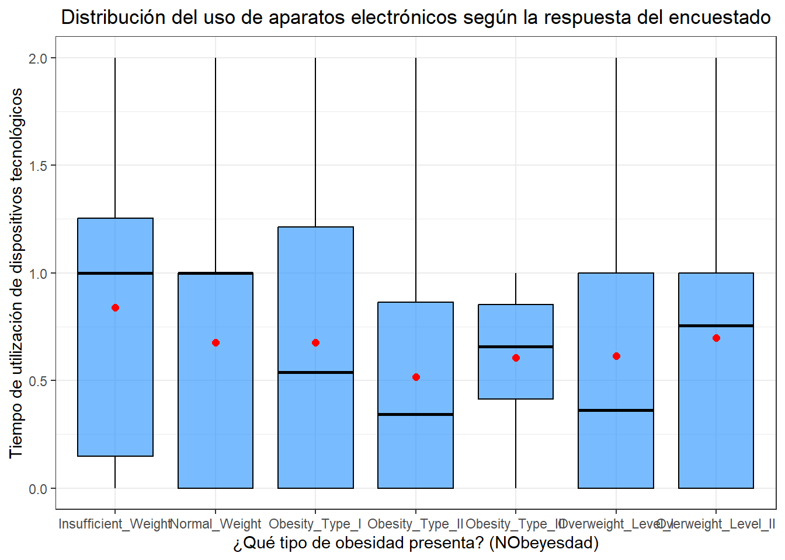

Chapter 5 Análisis univariado
##Análisis de la variable NObesyedad (Target)
## ── Attaching core tidyverse packages ──────────────────────── tidyverse 2.0.0 ──
## ✔ dplyr 1.1.4 ✔ readr 2.1.5
## ✔ forcats 1.0.0 ✔ stringr 1.5.1
## ✔ ggplot2 3.5.2 ✔ tibble 3.3.0
## ✔ lubridate 1.9.4 ✔ tidyr 1.3.1
## ✔ purrr 1.1.0
## ── Conflicts ────────────────────────────────────────── tidyverse_conflicts() ──
## ✖ dplyr::filter() masks stats::filter()
## ✖ dplyr::lag() masks stats::lag()
## ℹ Use the conflicted package (<http://conflicted.r-lib.org/>) to force all conflicts to become errors## Cargando paquete requerido: Rcpp
## ##
## ## Amelia II: Multiple Imputation
## ## (Version 1.8.3, built: 2024-11-07)
## ## Copyright (C) 2005-2025 James Honaker, Gary King and Matthew Blackwell
## ## Refer to http://gking.harvard.edu/amelia/ for more information
## ####
## Adjuntando el paquete: 'gridExtra'
##
## The following object is masked from 'package:dplyr':
##
## combinedatos <- read_csv("C:/Users/natal/Downloads/estimation+of+obesity+levels+based+on+eating+habits+and+physical+condition/ObesityDataSet_raw_and_data_sinthetic.csv")## Rows: 2111 Columns: 17
## ── Column specification ────────────────────────────────────────────────────────
## Delimiter: ","
## chr (9): Gender, family_history_with_overweight, FAVC, CAEC, SMOKE, SCC, CAL...
## dbl (8): Age, Height, Weight, FCVC, NCP, CH2O, FAF, TUE
##
## ℹ Use `spec()` to retrieve the full column specification for this data.
## ℹ Specify the column types or set `show_col_types = FALSE` to quiet this message.## [1] 2111 17## [1] "Gender" "Age"
## [3] "Height" "Weight"
## [5] "family_history_with_overweight" "FAVC"
## [7] "FCVC" "NCP"
## [9] "CAEC" "SMOKE"
## [11] "CH2O" "SCC"
## [13] "FAF" "TUE"
## [15] "CALC" "MTRANS"
## [17] "NObeyesdad"## spc_tbl_ [2,111 × 17] (S3: spec_tbl_df/tbl_df/tbl/data.frame)
## $ Gender : chr [1:2111] "Female" "Female" "Male" "Male" ...
## $ Age : num [1:2111] 21 21 23 27 22 29 23 22 24 22 ...
## $ Height : num [1:2111] 1.62 1.52 1.8 1.8 1.78 1.62 1.5 1.64 1.78 1.72 ...
## $ Weight : num [1:2111] 64 56 77 87 89.8 53 55 53 64 68 ...
## $ family_history_with_overweight: chr [1:2111] "yes" "yes" "yes" "no" ...
## $ FAVC : chr [1:2111] "no" "no" "no" "no" ...
## $ FCVC : num [1:2111] 2 3 2 3 2 2 3 2 3 2 ...
## $ NCP : num [1:2111] 3 3 3 3 1 3 3 3 3 3 ...
## $ CAEC : chr [1:2111] "Sometimes" "Sometimes" "Sometimes" "Sometimes" ...
## $ SMOKE : chr [1:2111] "no" "yes" "no" "no" ...
## $ CH2O : num [1:2111] 2 3 2 2 2 2 2 2 2 2 ...
## $ SCC : chr [1:2111] "no" "yes" "no" "no" ...
## $ FAF : num [1:2111] 0 3 2 2 0 0 1 3 1 1 ...
## $ TUE : num [1:2111] 1 0 1 0 0 0 0 0 1 1 ...
## $ CALC : chr [1:2111] "no" "Sometimes" "Frequently" "Frequently" ...
## $ MTRANS : chr [1:2111] "Public_Transportation" "Public_Transportation" "Public_Transportation" "Walking" ...
## $ NObeyesdad : chr [1:2111] "Normal_Weight" "Normal_Weight" "Normal_Weight" "Overweight_Level_I" ...
## - attr(*, "spec")=
## .. cols(
## .. Gender = col_character(),
## .. Age = col_double(),
## .. Height = col_double(),
## .. Weight = col_double(),
## .. family_history_with_overweight = col_character(),
## .. FAVC = col_character(),
## .. FCVC = col_double(),
## .. NCP = col_double(),
## .. CAEC = col_character(),
## .. SMOKE = col_character(),
## .. CH2O = col_double(),
## .. SCC = col_character(),
## .. FAF = col_double(),
## .. TUE = col_double(),
## .. CALC = col_character(),
## .. MTRANS = col_character(),
## .. NObeyesdad = col_character()
## .. )
## - attr(*, "problems")=<externalptr>## # A tibble: 5 × 17
## Gender Age Height Weight family_history_with_overw…¹ FAVC FCVC NCP CAEC
## <chr> <dbl> <dbl> <dbl> <chr> <chr> <dbl> <dbl> <chr>
## 1 Female 21 1.62 64 yes no 2 3 Some…
## 2 Female 21 1.52 56 yes no 3 3 Some…
## 3 Male 23 1.8 77 yes no 2 3 Some…
## 4 Male 27 1.8 87 no no 3 3 Some…
## 5 Male 22 1.78 89.8 no no 2 1 Some…
## # ℹ abbreviated name: ¹family_history_with_overweight
## # ℹ 8 more variables: SMOKE <chr>, CH2O <dbl>, SCC <chr>, FAF <dbl>, TUE <dbl>,
## # CALC <chr>, MTRANS <chr>, NObeyesdad <chr>## # A tibble: 7 × 3
## NObeyesdad n Porcentaje
## <chr> <int> <dbl>
## 1 Insufficient_Weight 272 12.9
## 2 Normal_Weight 287 13.6
## 3 Obesity_Type_I 351 16.6
## 4 Obesity_Type_II 297 14.1
## 5 Obesity_Type_III 324 15.3
## 6 Overweight_Level_I 290 13.7
## 7 Overweight_Level_II 290 13.7# Crear tabla de frecuencias para la variable
tabla_NObeyesdad <- datos %>%
count(NObeyesdad, name = "Tipo_de_obesidad") %>%
mutate(Porcentaje = round(Tipo_de_obesidad / sum(Tipo_de_obesidad) * 100, 1),
Etiqueta = paste0(Tipo_de_obesidad, " (", Porcentaje, "%)"))
# Gráfico
tabla_NObeyesdad %>%
ggplot(aes(x = factor(NObeyesdad), y = Tipo_de_obesidad)) +
geom_col(fill = "#008B8B", width = 0.6) +
geom_text(aes(label = Etiqueta), vjust = -0.5, size = 3) +
facet_grid(~ "Tipo de sobrepeso de los encuestados") +
scale_y_continuous(expand = expansion(mult = c(0, 0.15))) +
labs(x = "Tipo de Sobrepeso", y = "Tipo de Sobrepeso (Porcentaje)") +
theme_bw(base_size = 14) +
theme(
plot.title = element_blank(),
strip.background = element_rect(fill = "gray80", color = NA),
strip.text = element_text(face = "bold"),
panel.grid.major.y = element_blank(),
axis.text.y = element_text(size = 8)
)
#variables independientes numéricas----
datos %>%
summarise(
n = length(Age),
media = mean(Age),
ds = sd(Age),
mediana = median(Age),
minimo = min(Age),
maximo = max(Age),
Q1 = quantile(Age, 0.25),
Q3 = quantile(Age, 0.75),
IQR = IQR(Age)) %>%
mutate(variable = "Age") -> var_num_edad
datos %>%
summarise(
n = length(Height),
media = mean(Height),
ds = sd(Height),
mediana = median(Height),
minimo = min(Height),
maximo = max(Height),
Q1 = quantile(Height, 0.25),
Q3 = quantile(Height, 0.75),
IQR = IQR(Height)) %>%
mutate(variable = "Height") -> var_num_est
datos %>%
summarise(
n = length(Weight),
media = mean(Weight),
ds = sd(Weight),
mediana = median(Weight),
minimo = min(Weight),
maximo = max(Weight),
Q1 = quantile(Weight, 0.25),
Q3 = quantile(Weight, 0.75),
IQR = IQR(Weight)) %>%
mutate(variable = "Weight") -> var_num_peso
datos %>%
summarise(
n = length(FCVC),
media = mean(FCVC),
ds = sd(FCVC),
mediana = median(FCVC),
minimo = min(FCVC),
maximo = max(FCVC),
Q1 = quantile(FCVC, 0.25),
Q3 = quantile(FCVC, 0.75),
IQR = IQR(FCVC)) %>%
mutate(variable = "FCVC") -> var_num_evm
datos %>%
summarise(
n = length(NCP),
media = mean(NCP),
ds = sd(NCP),
mediana = median(NCP),
minimo = min(NCP),
maximo = max(NCP),
Q1 = quantile(NCP, 0.25),
Q3 = quantile(NCP, 0.75),
IQR = IQR(NCP)) %>%
mutate(variable = "NCP") -> var_num_meal
datos %>%
summarise(
n = length(CH2O),
media = mean(CH2O),
ds = sd(CH2O),
mediana = median(CH2O),
minimo = min(CH2O),
maximo = max(CH2O),
Q1 = quantile(CH2O, 0.25),
Q3 = quantile(CH2O, 0.75),
IQR = IQR(CH2O)) %>%
mutate(variable = "CH2O") -> var_num_agu
datos %>%
summarise(
n = length(FAF),
media = mean(FAF),
ds = sd(FAF),
mediana = median(FAF),
minimo = min(FAF),
maximo = max(FAF),
Q1 = quantile(FAF, 0.25),
Q3 = quantile(FAF, 0.75),
IQR = IQR(FAF)) %>%
mutate(variable = "FAF") -> var_num_phy
datos %>%
summarise(
n = length(TUE),
media = mean(TUE),
ds = sd(TUE),
mediana = median(TUE),
minimo = min(TUE),
maximo = max(TUE),
Q1 = quantile(TUE, 0.25),
Q3 = quantile(TUE, 0.75),
IQR = IQR(TUE)) %>%
mutate(variable = "TUE") -> var_num_tec
bind_rows(var_num_edad, var_num_est, var_num_peso, var_num_evm, var_num_meal, var_num_agu, var_num_phy, var_num_tec) %>%
select(variable, everything())## # A tibble: 8 × 10
## variable n media ds mediana minimo maximo Q1 Q3 IQR
## <chr> <int> <dbl> <dbl> <dbl> <dbl> <dbl> <dbl> <dbl> <dbl>
## 1 Age 2111 24.3 6.35 22.8 14 61 19.9 26 6.05
## 2 Height 2111 1.70 0.0933 1.70 1.45 1.98 1.63 1.77 0.138
## 3 Weight 2111 86.6 26.2 83 39 173 65.5 107. 42.0
## 4 FCVC 2111 2.42 0.534 2.39 1 3 2 3 1
## 5 NCP 2111 2.69 0.778 3 1 4 2.66 3 0.341
## 6 CH2O 2111 2.01 0.613 2 1 3 1.58 2.48 0.893
## 7 FAF 2111 1.01 0.851 1 0 3 0.125 1.67 1.54
## 8 TUE 2111 0.658 0.609 0.625 0 2 0 1 1# Boxplot de Age
p1 <- datos %>%
ggplot(aes(x="", y = Age)) +
geom_boxplot(fill = "#2f77b9", alpha = 0.7) +
labs(
title = " Edad de los encuestados",
y = "Edad (años)",
x = ""
) +
theme_bw()
# Boxplot de Height
p2 <- datos %>%
ggplot(aes(x="", y = Height)) +
geom_boxplot(fill = "#2c99d1", alpha = 0.7) +
labs(
title = " Estatura de los encuestados",
y = "Altura (m)",
x = ""
) +
theme_bw()
# Boxplot de Weight
p3 <- datos %>%
ggplot(aes(x="", y = Weight)) +
geom_boxplot(fill = "red", alpha = 0.7) +
labs(
title = " Peso de los encuestados",
y = "Peso (kg)",
x = ""
) +
theme_bw()
# Boxplot de FCVC
p4 <- datos %>%
ggplot(aes(x="", y = FCVC)) +
geom_boxplot(fill = "green", alpha = 0.7) +
labs(
title = " Consumo de vegetales",
y = "Cant. Vegetales",
x = ""
) +
theme_bw()
# Boxplot de NCP
p5 <- datos %>%
ggplot(aes(x="", y = NCP)) +
geom_boxplot(fill = "yellow", alpha = 0.7) +
labs(
title = " Cantidad de comidas al día",
y = "Comidas diarias",
x = ""
) +
theme_bw()
# Boxplot de CH2O
p6 <- datos %>%
ggplot(aes(x="", y = CH2O)) +
geom_boxplot(fill = "darkblue", alpha = 0.7) +
labs(
title = " Consumo de agua",
y = "Agua (l)",
x = ""
) +
theme_bw()
# Boxplot de FAF
p7 <- datos %>%
ggplot(aes(x="", y = FAF)) +
geom_boxplot(fill = "#8d42b1", alpha = 0.7) +
labs(
title = " Implementación de actividad fisica ",
y = "Cantidad de actividad fisica",
x = ""
) +
theme_bw()
# Boxplot de TUE
p8 <- datos %>%
ggplot(aes(x="", y = TUE)) +
geom_boxplot(fill = "purple", alpha = 0.7) +
labs(
title = " Utilizacion de aparatos electronicos ",
y = "Cantidad de dispositivos tecnologicos",
x = ""
) +
theme_bw()
#unión de los gráficos
grid.arrange(p1, p2, p3, p4, p5, p6, p7, p8, ncol =3 ,newpage =TRUE)
#variables independientes categoricas----
#tabla de frecuencia para Gender
tabla_Gender <- datos %>%
count(Gender, name = "Frecuencia") %>%
mutate(
Porcentaje = round(Frecuencia / sum(Frecuencia) * 100, 2),
Variable = "Gender",
Categoria = Gender) %>%
select(Variable, Categoria, Frecuencia, Porcentaje)
#tabla de frecuencia para family_history_with_overweight
tabla_family_history_with_overweight <- datos %>%
count(family_history_with_overweight, name = "Frecuencia") %>%
mutate(
Porcentaje = round(Frecuencia / sum(Frecuencia) * 100, 2),
Variable = "family_history_with_overweight",
Categoria = family_history_with_overweight) %>%
select(Variable, Categoria, Frecuencia, Porcentaje)
#tabla de frecuencia para FAVC
tabla_FAVC <- datos %>%
count(FAVC, name = "Frecuencia") %>%
mutate(
Porcentaje = round(Frecuencia / sum(Frecuencia) * 100, 2),
Variable = "FAVC",
Categoria = FAVC ) %>%
select(Variable, Categoria, Frecuencia, Porcentaje)
#tabla de frecuencia para CAEC
tabla_CAEC <- datos %>%
count(CAEC, name = "Frecuencia") %>%
mutate(
Porcentaje = round(Frecuencia / sum(Frecuencia) * 100, 2),
Variable = "CAEC",
Categoria = CAEC ) %>%
select(Variable, Categoria, Frecuencia, Porcentaje)
#tabla de frecuencia para SMOKE
tabla_SMOKE <- datos %>%
count(SMOKE, name = "Frecuencia") %>%
mutate(
Porcentaje = round(Frecuencia / sum(Frecuencia) * 100, 2),
Variable = "SMOKE",
Categoria = SMOKE ) %>%
select(Variable, Categoria, Frecuencia, Porcentaje)
#tabla de frecuencia para SCC
tabla_SCC <- datos %>%
count(SCC, name = "Frecuencia") %>%
mutate(
Porcentaje = round(Frecuencia / sum(Frecuencia) * 100, 2),
Variable = "SCC",
Categoria = SCC ) %>%
select(Variable, Categoria, Frecuencia, Porcentaje)
#tabla de frecuencia para CALC
tabla_CALC <- datos %>%
count(CALC, name = "Frecuencia") %>%
mutate(
Porcentaje = round(Frecuencia / sum(Frecuencia) * 100, 2),
Variable = "CALC",
Categoria = CALC ) %>%
select(Variable, Categoria, Frecuencia, Porcentaje)
#tabla de frecuencia para MTRANS
tabla_MTRANS <- datos %>%
count(MTRANS, name = "Frecuencia") %>%
mutate(
Porcentaje = round(Frecuencia / sum(Frecuencia) * 100, 2),
Variable = "MTRANS",
Categoria = MTRANS ) %>%
select(Variable, Categoria, Frecuencia, Porcentaje)
# Unir todas las tablas
bind_rows(tabla_Gender, tabla_family_history_with_overweight, tabla_FAVC,tabla_CAEC,
tabla_SMOKE, tabla_SCC,tabla_CALC, tabla_MTRANS)## # A tibble: 23 × 4
## Variable Categoria Frecuencia Porcentaje
## <chr> <chr> <int> <dbl>
## 1 Gender Female 1043 49.4
## 2 Gender Male 1068 50.6
## 3 family_history_with_overweight no 385 18.2
## 4 family_history_with_overweight yes 1726 81.8
## 5 FAVC no 245 11.6
## 6 FAVC yes 1866 88.4
## 7 CAEC Always 53 2.51
## 8 CAEC Frequently 242 11.5
## 9 CAEC Sometimes 1765 83.6
## 10 CAEC no 51 2.42
## # ℹ 13 more rows#análisis bivariado
# Diagrama boxplot: NObeyesdad vs Age
datos %>%
ggplot(aes(x = factor(NObeyesdad), y = Age)) +
geom_boxplot(fill = "#1E90FF", alpha = 0.6, color = "black") +
stat_summary(fun = mean, geom = "point", shape = 20, size = 3, color = "red") +
labs(
title = "Distribución de la edad según el tipo de obesidad",
x = "¿Qué tipo de obesidad presenta? (NObeyesdad)",
y = "Edad del encuestado"
) +
theme_bw() +
theme(
plot.title = element_text(hjust = 0.5),
strip.background = element_rect(fill = "gray90", color = NA),
strip.text = element_text(face = "bold")
)
# Diagrama boxplot: NObeyesdad vs Height
datos %>%
ggplot(aes(x = factor(NObeyesdad), y = Height)) +
geom_boxplot(fill = "#1E90FF", alpha = 0.6, color = "black") +
stat_summary(fun = mean, geom = "point", shape = 20, size = 3, color = "red") +
labs(
title = "Distribución de la altura según la respuesta del encuestado",
x = "¿Qué tipo de obesidad presenta? (NObeyesdad)",
y = "Estatura del encuestado"
) +
theme_bw() +
theme(
plot.title = element_text(hjust = 0.5),
strip.background = element_rect(fill = "gray90", color = NA),
strip.text = element_text(face = "bold")
)
# Diagrama boxplot: NObeyesdad vs Weight
datos %>%
ggplot(aes(x = factor(NObeyesdad), y = Weight)) +
geom_boxplot(fill = "#1E90FF", alpha = 0.6, color = "black") +
stat_summary(fun = mean, geom = "point", shape = 20, size = 3, color = "red") +
labs(
title = "Distribución de la altura según la respuesta del encuestado",
x = "¿Qué tipo de obesidad presenta? (NObeyesdad)",
y = "Peso del encuestado"
) +
theme_bw() +
theme(
plot.title = element_text(hjust = 0.5),
strip.background = element_rect(fill = "gray90", color = NA),
strip.text = element_text(face = "bold")
)
# Diagrama boxplot: NObeyesdad vs FCVC
datos %>%
ggplot(aes(x = factor(NObeyesdad), y = FCVC)) +
geom_boxplot(fill = "#1E90FF", alpha = 0.6, color = "black") +
stat_summary(fun = mean, geom = "point", shape = 20, size = 3, color = "red") +
labs(
title = "Distribución del consumo de vegetales según la respuesta del encuestado",
x = "¿Qué tipo de obesidad presenta? (NObeyesdad)",
y = "Consumo de vegetales del encuestado"
) +
theme_bw() +
theme(
plot.title = element_text(hjust = 0.5),
strip.background = element_rect(fill = "gray90", color = NA),
strip.text = element_text(face = "bold")
)
# Diagrama boxplot: NObeyesdad vs NCP
datos %>%
ggplot(aes(x = factor(NObeyesdad), y = NCP)) +
geom_boxplot(fill = "#1E90FF", alpha = 0.6, color = "black") +
stat_summary(fun = mean, geom = "point", shape = 20, size = 3, color = "red") +
labs(
title = "Distribución de laS Comidas consumidas según la respuesta del encuestado",
x = "¿Qué tipo de obesidad presenta? (NObeyesdad)",
y = "Número de comidas que consume el encuestado"
) +
theme_bw() +
theme(
plot.title = element_text(hjust = 0.5),
strip.background = element_rect(fill = "gray90", color = NA),
strip.text = element_text(face = "bold")
)
# Diagrama boxplot: NObeyesdad vs CH2O
datos %>%
ggplot(aes(x = factor(NObeyesdad), y = CH2O)) +
geom_boxplot(fill = "#1E90FF", alpha = 0.6, color = "black") +
stat_summary(fun = mean, geom = "point", shape = 20, size = 3, color = "red") +
labs(
title = "Distribución del consumo de agua según la respuesta del encuestado",
x = "¿Qué tipo de obesidad presenta? (NObeyesdad)",
y = "Litros de agua que consume el encuestado"
) +
theme_bw() +
theme(
plot.title = element_text(hjust = 0.5),
strip.background = element_rect(fill = "gray90", color = NA),
strip.text = element_text(face = "bold")
)
# Diagrama boxplot: NObeyesdad vs FAF
datos %>%
ggplot(aes(x = factor(NObeyesdad), y = FAF)) +
geom_boxplot(fill = "#1E90FF", alpha = 0.6, color = "black") +
stat_summary(fun = mean, geom = "point", shape = 20, size = 3, color = "red") +
labs(
title = "Distribución de la actividad física según la respuesta del encuestado",
x = "¿Qué tipo de obesidad presenta? (NObeyesdad)",
y = "Cuantas veces hace actividad física el encuestado"
) +
theme_bw() +
theme(
plot.title = element_text(hjust = 0.5),
strip.background = element_rect(fill = "gray90", color = NA),
strip.text = element_text(face = "bold")
)
# Diagrama boxplot: NObeyesdad vs TUE
datos %>%
ggplot(aes(x = factor(NObeyesdad), y = TUE)) +
geom_boxplot(fill = "#1E90FF", alpha = 0.6, color = "black") +
stat_summary(fun = mean, geom = "point", shape = 20, size = 3, color = "red") +
labs(
title = "Distribución del uso de aparatos electrónicos según la respuesta del encuestado",
x = "¿Qué tipo de obesidad presenta? (NObeyesdad)",
y = "Tiempo de utilización de dispositivos tecnológicos"
) +
theme_bw() +
theme(
plot.title = element_text(hjust = 0.5),
strip.background = element_rect(fill = "gray90", color = NA),
strip.text = element_text(face = "bold"))